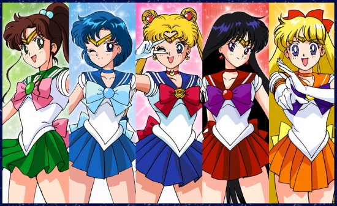

세일러문
- 방영기간: 1992년3월7일 ~ 1997년2월8일
- 작가: 타케우치 나오코
- 화수: 200화
줄거리
성적 하위권에, 늦잠쟁이에, 툭하면 울어버리는 츠키노 우사기는 평범한 중학교 2년생입니다.
어느날 괴롭힘 당하는 고양이를 도와준 것을 계기로 하여, 마물들을 해치우는 정의의 용사인 세일러문이 됩니다.
처음에는 흉측한 괴물들을 보고 울어버리기 일쑤였지만, 위험한 순간 세일러문을 도와주는 꽃미남 턱시도 가면을 보고 한눈에 반해 계속 힘 내기를 결심합니다.
세일러문의 임무는 두 가지입니다. 하나는 적과 함께 싸울 동료를 모으는 것. 또 다른 하나는 세상을 구해줄 실버밀레니엄의 프린세스를 찾는 것입니다.